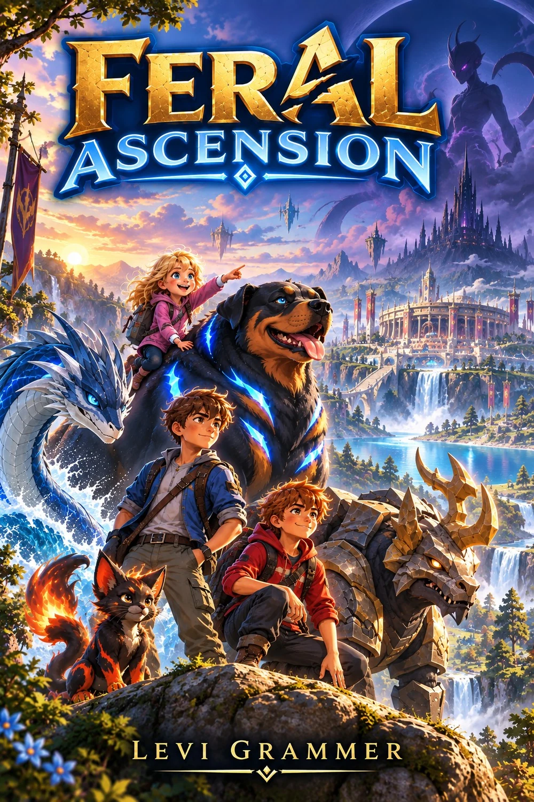

SYSTEM STATUS // ONLINE
Personal Interface 1.0
The complete Book 1 companion HUD. Set your current chapter and the System seals later discoveries automatically.
60 CHAPTER SYNCSPOILER SHIELDOBSERVED DEX
SYNCED
STORY PROGRESS
02%BOOK 01 // CHAPTER 1
0115304560
FERAL DEX0OBSERVED
ABILITIES0KNOWN RECORDS
ITEMS0ARCHIVED
SYSTEM LOGCHAPTER SYNC
FERALS // OBSERVED ARCHIVE
Feral Dex
Book 1 records only. The known roster represents a fraction of the world's Feral species.
SANCTUARY
Feral Sanctuary
Bonded residents, conditions, habitat records, and chapter-aware forms.
SANCTUARY PROTOCOLSYSTEM VERIFIED
INVENTORY
Item Archive
Equipment, materials, consumables, vouchers, tokens, and rewards.
ESSENCES
Essence Archive
Known Essence records and integration status.
ABILITIES
Ability Database
Trainer and Feral abilities revealed by the System.
QUESTS
Quest & Achievement Log
System objectives, challenges, contracts, and achievements.
ACHIEVEMENTSARCHIVE
MAP
Known World
Fog-of-war clears as location data is acquired.
YOU
TOURNAMENT
Ascension Tournament
Rank progression, event rules, and participant systems.
SYSTEM
System Archive
Interface protocols and known rules.
RELEASE BUILD
FERAL ASCENSION HUD v1.0.0
Book 1 // Chapters 1–60 // complete current archive. Future books extend this same Personal Interface.